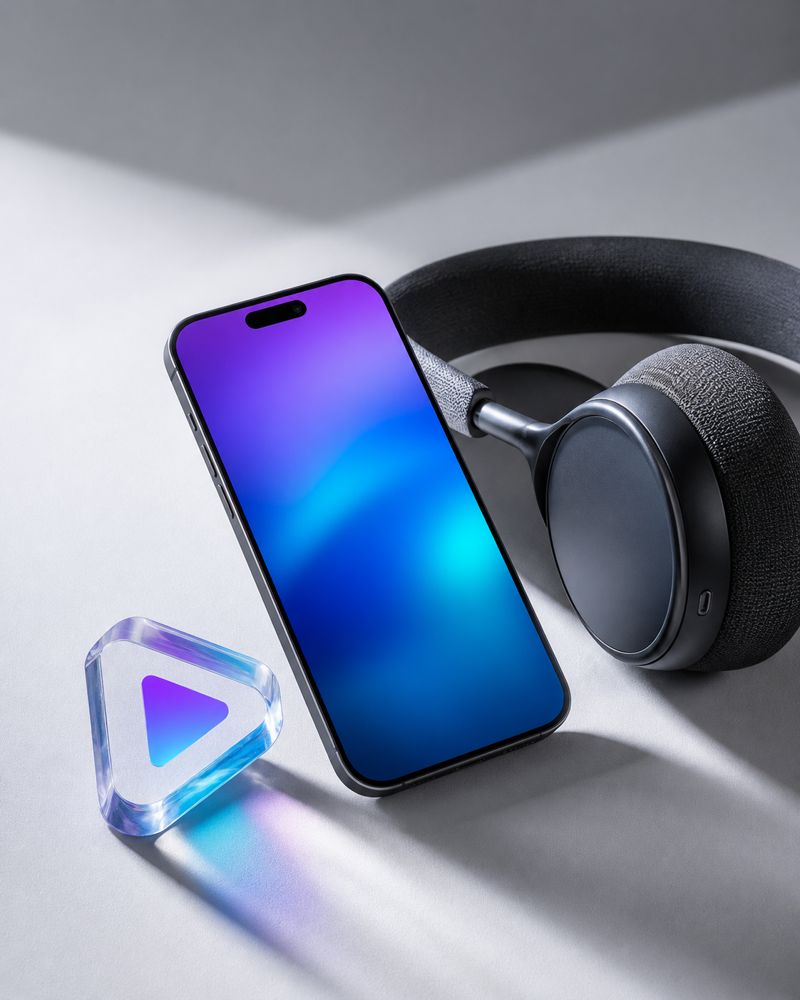
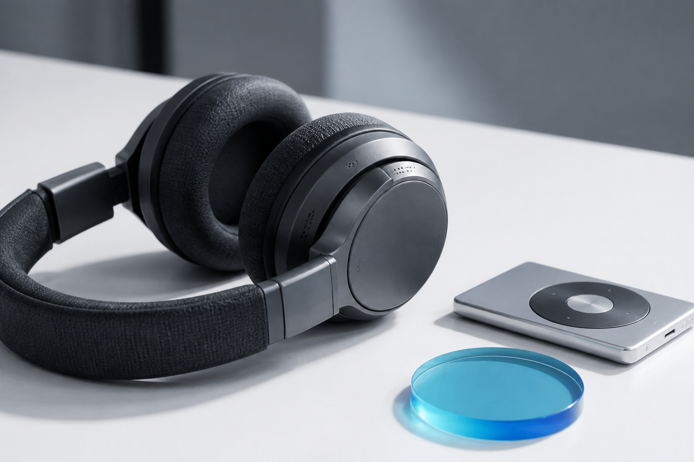

Cole
Copie o endereço da mídia na plataforma de origem.
Cole o link, escolha vídeo ou áudio e prepare o arquivo na qualidade certa para cada momento.

Preparado para links de
Analise o link, escolha o formato e prepare o arquivo sem sair da página.
Depois da análise, as opções de formato e qualidade aparecem aqui.
O processo foi reduzido ao que realmente importa.
Copie o endereço da mídia na plataforma de origem.
Defina vídeo, áudio e a qualidade adequada.
Confirme a opção e salve no seu dispositivo.
Escolha definição, compatibilidade ou tamanho de arquivo.
Recursos claros para quem quer decidir rápido e seguir com o dia.

Bitrates para ouvir no fone, no carro ou em caixas maiores.
Resoluções para diferentes telas e conexões.
O fluxo começa pelo link, não por um perfil.
Uma experiência adaptada para qualquer tela.
Nada para instalar antes de começar.
Prepare vídeos e músicas para ouvir quando a conexão não acompanhar você.
Respostas diretas sobre uso, formatos e funcionamento.
Não. A experiência foi desenhada para funcionar direto no navegador.
O fluxo prevê MP4 para vídeo e MP3 ou M4A para áudio.
Sim. A página se adapta a computadores, tablets e celulares.
Use apenas mídia própria, autorizada ou em domínio público.
Escolha o formato certo para o momento certo.
Ver formatos